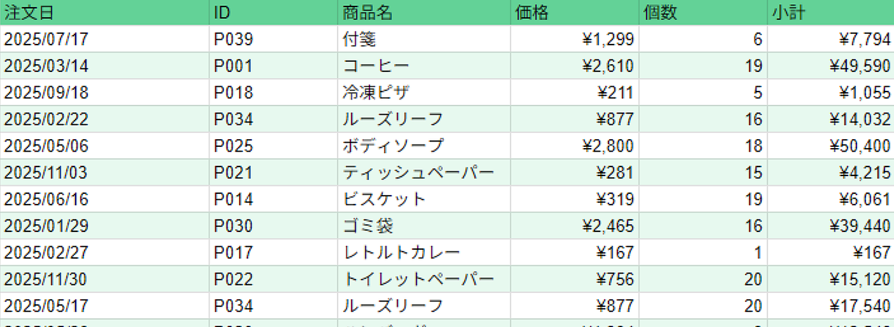
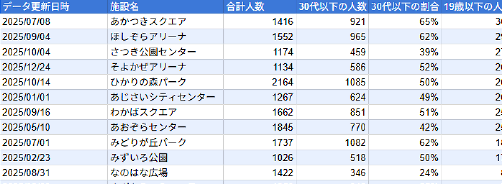
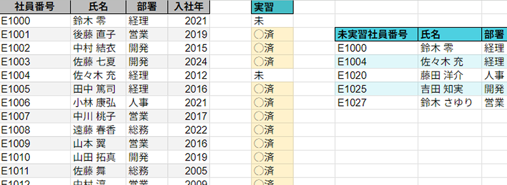

プロフィール
現在、HTML/CSSやPythonを独学で学習しています。
未経験ですが、力を伸ばそうと日々実用書やAI等を用いて勉強しています。
学習中のスキル
- Python基礎文法、簡単な自動化スクリプト
- HTML / CSS 簡単なWebページ作成
- Javascript 基礎文法
作成したもの

伝票風シート
スプレッドシートで作成した伝票風シートです。VLOOKUPの練習として作成しました。
集計・グラフ等も作成しています。

施設データシート
スプレッドシートで作成した施設に関するデータシートです。実用的なデータピックの練習として作成しました。
集計・グラフ等も作成しています。

突合データシート
スプレッドシートで作成したデータシートです。実用的な突合の練習として作成しました。
QUERY関数やデータの並べ替えについても練習しています。
志望動機
実習を通じて、日々の業務には自動化や効率化の可能性が多く存在することを学びました。
そこから、社内SEとして現場を支えるシステム改善や運用に携わりたいと考えるようになりました。
貴社を志望した理由は、企業理念である「障害者雇用の創出」と「長期的な就業環境の整備」に深く共感したからです。
特に、働きたいのに働けない方々に寄り添い、環境を整えるだけでなく、自己実現の場を提供するという姿勢に強く惹かれました。
IT業界は未経験ですが、技術への興味と学習意欲は高く、オンライン学習サービスや専門書を活用してプログラミングを学んでまいりました。
また、趣味であるデザインと組み合わせることで、知識を実際に活かす経験も積んでいます。
今後も継続的に学びながら、貴社のIT運用を通じて現場を支え、社会的な価値を高める一助となりたいと考えております。